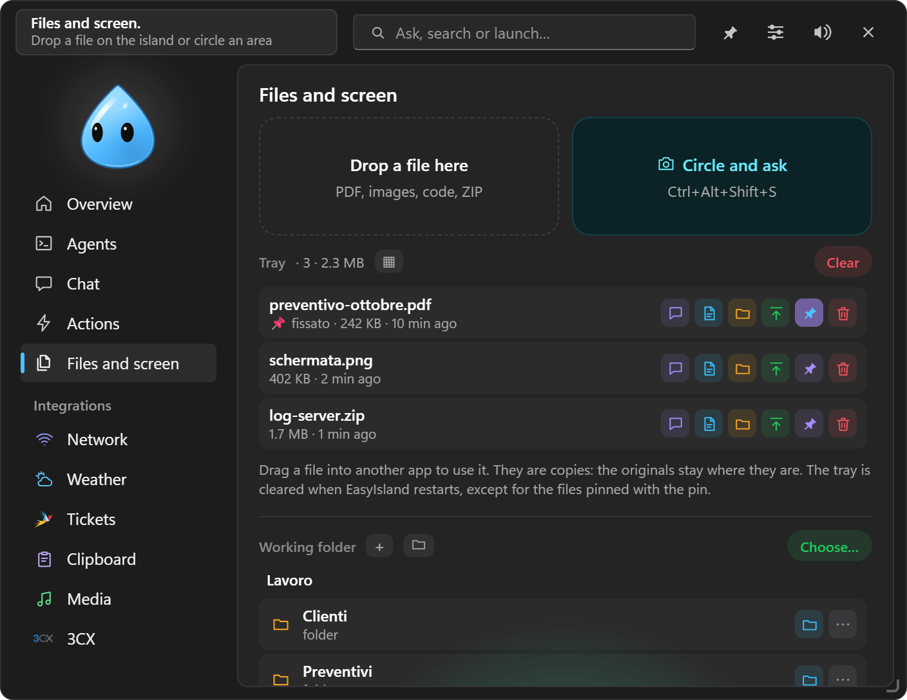
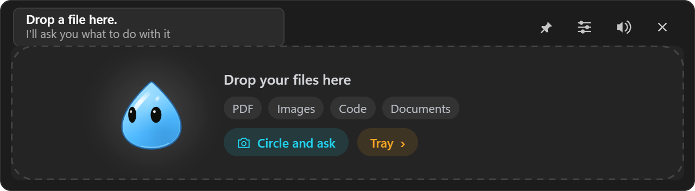
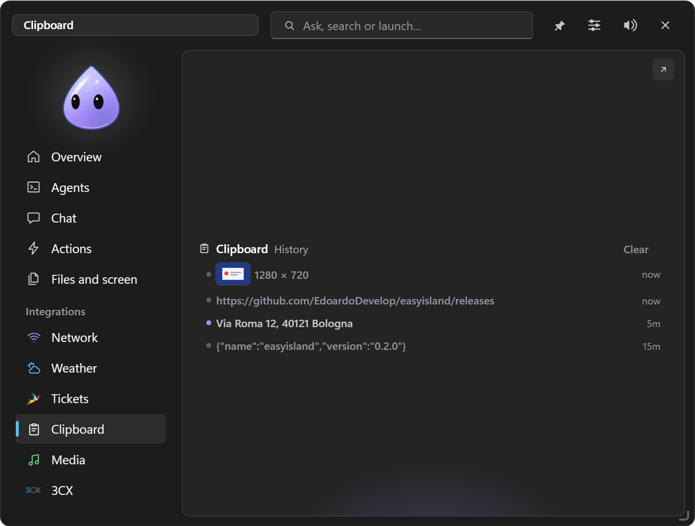

Files and screen
Dropping files, the Tray, the working folder, Circle and ask, Record, ZIP and suggestions at the right moment.

#Dropping a file
Drag a file onto the island (it opens even when set to "only with a click"): the character becomes a box, swallows it and asks what to do with it: ask the chat a question, run a quick action that works on files, or, for a ZIP, Extract…. A dropped folder ends up as a path in the chat field.

#The Tray
Dropped files, screen areas, chat exports, custom integrations' documents, files from Telegram: everything goes through the Tray, as a list or a grid.
- Drag a file from the Tray into another app (mail, chat, folder).
- Ask the chat, Open, Show in folder, Copy.
- 📌 Pin: pinned files survive a restart; the others are cleared at every start.
- The green icon moves it to the working folder.
They are copies: the originals are never touched.
#Working folder
A folder on the PC chosen by you with Choose… (here or in Settings → Chat). Under the Tray you browse it: double-click to enter or open, ".." to go up, + new folder, drag to other apps. On every item: Ask the chat, Open, and in "⋯" Rename, Move…, To the Tray, Copy path, Recycle Bin (the Windows Recycle Bin: nothing is deleted for good).
The chat reads it without asking and moves Tray files into it (with confirmation); with terminal mode it's the folder it works in. From Telegram: /cartella shows it as buttons and sends you the files. Every path is checked: nothing gets out of the folder.
#Circle and ask
Ctrl+Alt+Shift+S, or the Circle and ask tile: the screen freezes and dims. Circle or box an area and next to it you get:
- Ask…: type the question and Enter, the chat opens with the area;
- your quick actions;
- Copy image;
- Copy text, recognised by Windows (local OCR);
- To the Tray.
Esc or the right button cancel. Handy for getting an error window explained.
#Record
In the Files and screen tab, Record captures:
- a conversation (microphone and PC audio, the other side of a call too);
- the whole screen;
- a single window, even when covered by others.
While recording, the red dot, the time and Stop stay next to the character, always visible. The file goes to Videos\EasyIsland (or the folder you choose) and to the Tray. No dependencies: it uses Windows' APIs.
#ZIP
Dropping a ZIP: Extract… shows what it contains and extracts it into a new folder next to the original, in Downloads or on the Desktop.
#Suggestions at the right moment
The island notices what happens on the PC and proposes the next step with one click, never covering what you're doing:
- Download finished: open, show in folder, to the Tray, ask the chat; for a ZIP, extract.
- Error copied (with Clipboard on): "Explain it".
- Dev server started (a new listening port from a development program): open in the browser.
- Password or key copied from a password manager: clear it from the clipboard after a while.
They count as alerts: "Permissions only" and "in front of a client" keep them away.
#Clipboard
The Clipboard integration keeps the last 30 texts and 10 images copied, plus pinned ones, in memory only: click to paste into the foreground app, or copy, transform (UPPERCASE, lowercase, one line, no spaces, JSON, URL), pin, delete; on images Ask the chat. What password managers mark as private isn't recorded. Ctrl+Alt+H opens it.
